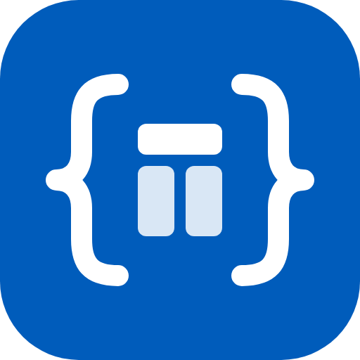
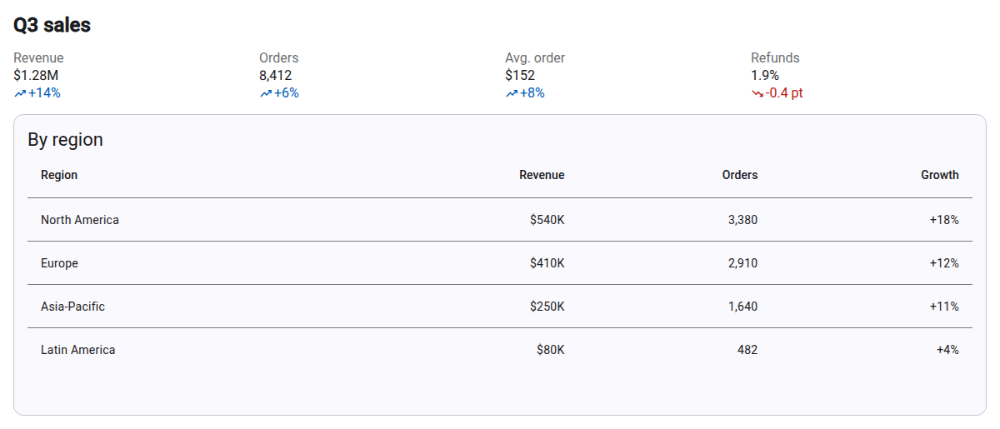
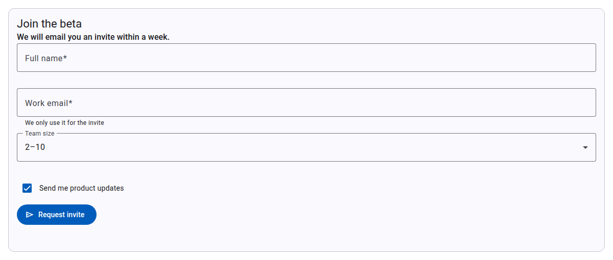
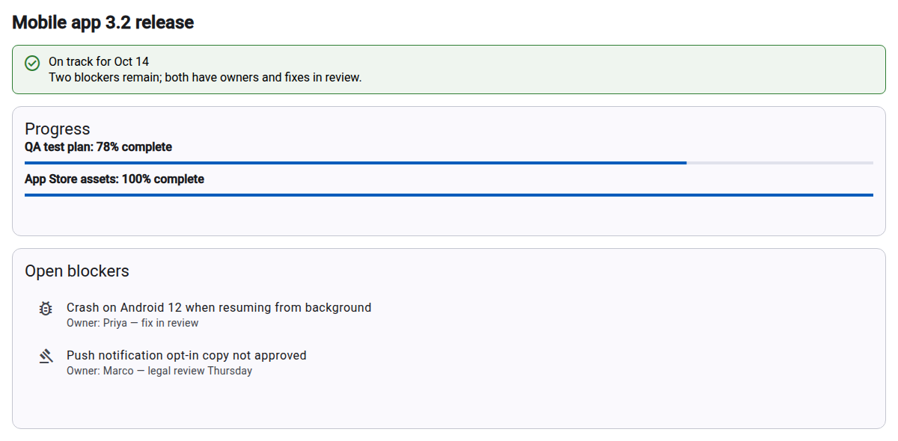
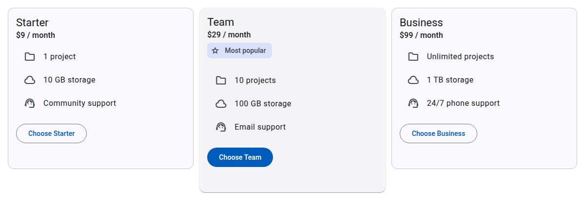

ngx-json-render MCP App
An MCP server with one tool, render-ui. When you ask your AI
assistant for a dashboard, a form, a status summary or a comparison, it
describes the UI as a
json-render spec
and the tool renders it inline in the chat as interactive Angular Material
components: tables, cards, metrics, forms with validation, tabs, lists and
buttons.
It works in any client that supports MCP Apps: Claude, ChatGPT, VS Code, Cursor, Goose and others. No account and no authentication are needed, and the server stores nothing (see the privacy policy).
Server URL (Streamable HTTP, no authentication):
https://ngx-json-render.vercel.app/mcp-s user it is added to the current project only.
claude mcp add -s user --transport http ngx-json-render-ui https://ngx-json-render.vercel.app/mcpclaude mcp get ngx-json-render-ui should report
Connected; the render-ui tool is available in
sessions started after that.
{
"mcpServers": {
"ngx-json-render": { "url": "https://ngx-json-render.vercel.app/mcp" }
}
}



render-ui toolspec, a json-render spec: a
root element key, a flat map of elements (each
a component type, its props and its
children), and an optional state object that
props bind to. The tool description lists the 28 available components
and their props.
Report problems and ask questions in GitHub issues. The source is in projects/mcp-app of the ngx-json-render repository (Apache-2.0).